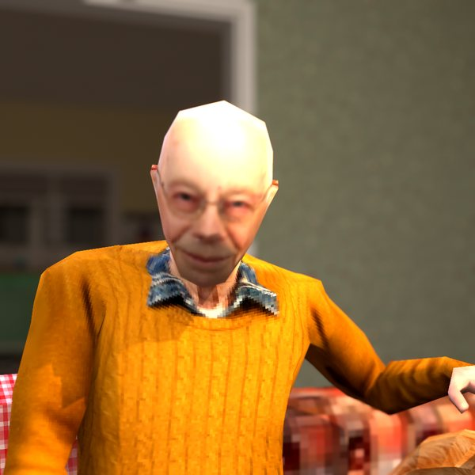
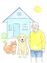

Wholesome cat videos from grandpa's house.
Ziggy is waiting for a pet.
Meet the stars


Why cats do the funny things they do, gently explained
Cozy little stories from one little house
Kittens.
So many kittens.

Also living here
A golden retriever who means well, a tortie with a lot of opinions and more kittens than strictly necessary.